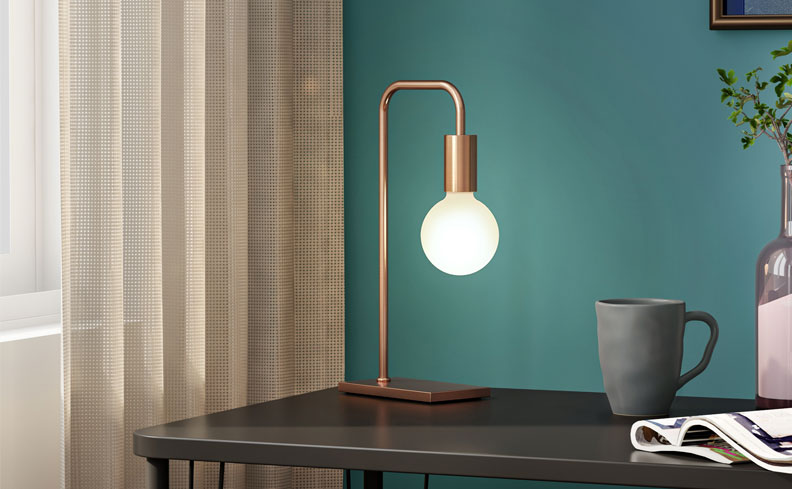
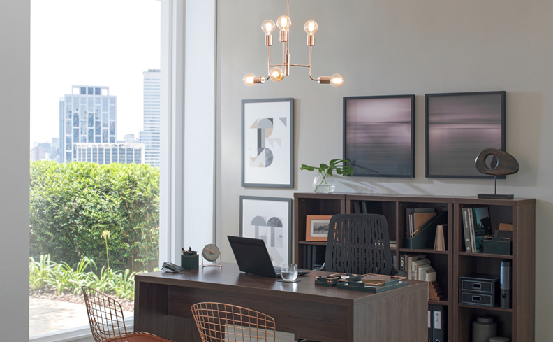

Design em luminárias
Além de sua função, as luminárias podem influenciar no design e estilo de um ambiente. Seja ele sofisticado, industrial ou despojado, este é um ponto que o decorador pode ajudá-lo a encontrar a melhor opção. Para isso, ele deve avaliar alguns critérios, como o tamanho do espaço, sua função, as cores do ambiente e o mobiliário que compõe o cômodo.
Dependendo do modelo da luminária, ela pode destacar ou até esconder partes da decoração, seguindo a proposta do ambiente. Antes de escolher a luminária ideal, é importante entender alguns pontos fundamentais para criar um espaço que traga bem-estar todos os dias.
Aconchego prolongado
Ainda que o uso de tapetes possa ser uma questão pessoal, eles podem ser pontos de partida para a transformação de um ambiente. São modelos, cores, texturas e tamanhos variados que se adaptam ao estilo e necessidade do cômodo. Mesmo sendo um acessório cheio de paradoxos, vale entender melhor suas possibilidades – e ninguém melhor que um decorador para indicar os caminhos.

Salário Mnímo Profissional do Decorador
Os decoradores não possuem um salário mínimo profissional. A profissão não é regulamentada nem está organizada em sindicatos ou associações profissionais, o que impossibilita a definição de pisos salariais para a atividade no Brasil. Houve, recentemente, uma tentativa de regulamentação da carreira de Decorador. A ideia era restringir o exercício da profissão aos portadores de diploma de nível superior em decoração ou àqueles formados em áreas afins, como Arquitetura e Desenho Industrial. O projeto foi considerado inconstitucional por limitar o livre exercício de uma atividade que não representa dano à sociedade.
Salário Médio de um Decorador
No Brasil, um decorador ganha em média R$ 1.059, de acordo com o Guia de Profissões e Salários da Catho. Os valores começam em R$ 940 e podem chegar a até R$ 3.500, no máximo. O Banco Nacional de Empregos (BNE), por sua vez, revela uma média salarial mais animadora – R$ 2.061 ? embora o salário mais alto registrado seja um pouco mais baixo que o da Catho: R$ 3.230. O BNE também mostra quanto ganham os decoradores de diversos níveis de experiência em atuação em pequenas, médias e grandes empresas. Confira os salários:
Início de carreira (até 2 anos de experiência)
Empresa de pequeno porte: R$ 1.282
Empresa de médio porte: R$ 1.359
Empresa de grande porte: R$ 1.846
Como se tornar um Decorador
O interessado em fazer um curso na área de decoração pode optar por cursos técnicos em diversas instituições espalhadas pelo País. Exemplos como Senac, Instituto Brasileiro de Desingn de Interiores e Centro Universitarios
O que você precisa levar em conta na hora de contratar decoradores para um projeto de decoração:
Confira o portfólio do decorador: Não só a qualidade do decorador vai importar, mas também seu estilo. Estude seu portfólio para entender se o seu tipo de trabalho vai cair bem no ambiente que você está imaginando.
Pesquise estilos de decoração: Existem centenas de ideias disponíveis on-line. Pesquise muito, e fale com um profissional para ver a possibilidade de adotar estilos que você encontrou na internet. Lembre-se que o profissional irá orientar a decoração de acordo com fundamentos técnicos e a partir de seu conhecimento específico, por isso outras decorações podem servir como inspiração, mas cada espaço terá um resultado diferente.
Planeje no orçamento o acompanhamento do projeto: Além do projeto de decoração, pode ser necessário contratar o decorador também para acompanhar a montagem da decoração do cômodo ou imóvel. Neste caso, o valor cobrado pode ser por tempo de trabalho, partindo de R$ 100,00 por hora.